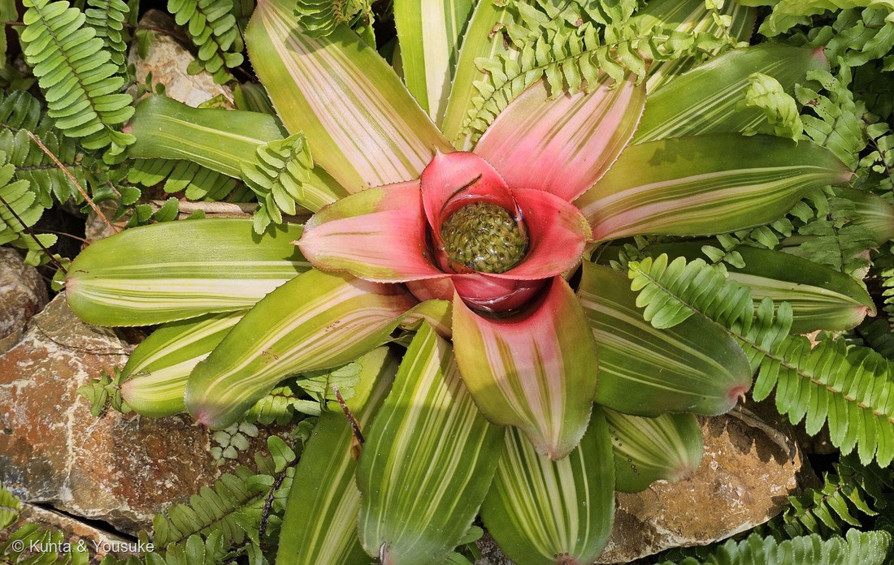
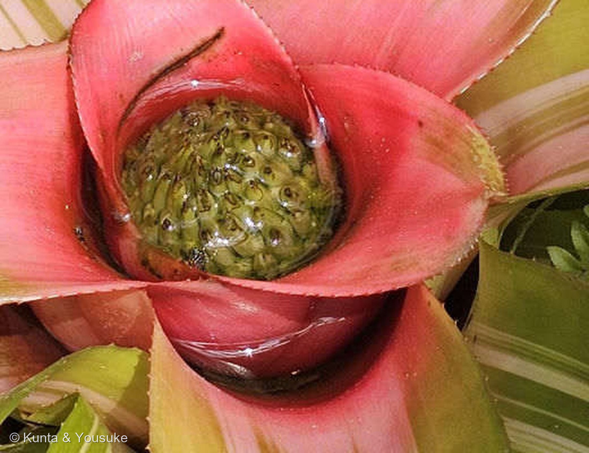
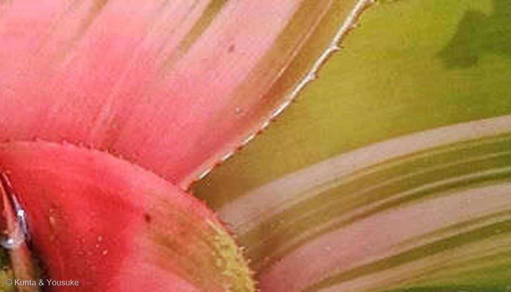

地図を読み込んでいるよ…
🔍 写真も地図も、押しているあいだ拡大して見られるよ（スマホは指を置いてすこし待ってね）。
🌍 の地図＝この子がもともと自生している場所を緑に。南アメリカ（ブラジルなどの熱帯雨林）。パイナップル科そのものが「ほとんどがアメリカ大陸・西インド諸島の熱帯・亜熱帯の原産」で、新世界だけの科。
⭐⭐この地図は、種ではなく「科のふるさと」を塗っている――⚠名札が無く種まで決めていないので、Neoregelia という属と、パイナップル科ぜんたいの分布で塗ったよ。日本語版Wikipediaは「ほとんどがアメリカ大陸・西インド諸島の熱帯・亜熱帯の原産」とし、英語版Wikipediaはネオレゲリア属を「native to South American rainforests」とする。⚠国ごとの線引きまで書いた出典には当たれていないので、ここはぼくの塗り分け。⭐⭐⭐そして、この科のいちばんおもしろいところ――ほぼ「新世界（南北アメリカと西インド諸島）だけ」の科で、アフリカやアジアには自然には生えていない（⚠西アフリカに1種だけ例外がいると言われるよ）。⭐ぼくらが会ったのは、長崎の植物園の植えこみだから、この緑の外だね。
⚠ 地図は国（日本と中国だけ県・省）までしか塗れないから、ほんとうの分布より広く見えていることがあるよ。地図はだいたいの場所。正確なところは、上の文を見てね。
ネオレゲリア（斑入りの園芸品種）
Neoregelia sp.（cf. N. carolinae f. tricolor）
別名 タンクブロメリアのなかま／英名 blushing bromeliad（赤らむブロメリア） 原産 南アメリカの熱帯雨林 ── ⚠園の植えこみの株で、名札は無し
パイナップル科 · Bromeliaceae（ネオレゲリア属 Neoregelia・イネ目 Poales）── ⭐図鑑ではじめてのパイナップル科＝96科目／⭐⭐イネ目では3つめの科（099 ヒメガマのガマ科、022 エノコログサたち8人のイネ科につづく）
燻太さんの一言「パイナップル科っぽい風貌。ロゼットの中心で水没している器官がすごく気になる。花序かな？でも花は咲いていない。中心の葉っぱが赤く色づいているのも、虫かなにかを引き寄せるサインだと思う」── ⭐⭐ふたつとも、そのとおりだったよ
⭐⭐⭐⭐⭐ 燻太さんの見立て、ふたつとも当たっていたよ
⭐⭐ 燻太さんの言葉＝「ロゼットの中心で水没している器官がすごく気になる。花序かな？でも花は咲いていない」「中心の葉っぱが赤く色づいているのも、虫かなにかを引き寄せるサインだと思う」。——⭐⭐⭐調べたら、両方とも、そのとおりだった。
⭐ ひとつめ ── あの水没している器官は、まちがいなく花序。
- 英語版Wikipedia（Neoregelia）＝「The inflorescences of these plants form in the shallow central depression - the 'cup' - of the plant, which often partially fills with water」。
- ⭐日本の園芸の説明も「筒状部の中に剣山状の花をつけますが、花は筒状部の上までは伸び出しません」。
- ⭐⭐⭐つまりネオレゲリアは花茎をほとんど伸ばさない属なんだ。——だから花序は、タンクの水に沈んだまま。⭐「花が咲いていない」のではなくて、⭐これから、水の中で咲く。
- ⭐⭐写真②を見てほしいな。——緑のかたまりの表面に、うろこのような苞（ほう）がびっしりならんでいる。⭐その一枚いちまいのあいだから、花が顔を出すんだよ。
⭐⭐ ふたつめ ── 中心の葉が赤いのは、やっぱり「看板」。
- 英語版Wikipedia＝「The leaves immediately surrounding the inflorescence are very often brightly colored, even in species otherwise not brightly marked ── an adaptation to attract pollinating insects」。
- ⭐⭐⭐⭐燻太さんの読みが、そのまま出典の説明だった。——⭐花が水に沈んで見えないぶん、葉のほうが看板になっている。
- ⭐英名の blushing bromeliad（赤らむブロメリア）も、この色変わりから。
- ⭐⭐図鑑には「花じゃないところを看板にする子」がたくさんいるけれど（048 カラーの仏炎苞、029 コエビソウの苞、133 アジサイの装飾花）、⭐この子は花を隠したうえで葉を光らせるという、いちばん思いきったやり方だと思う。
この植物のこと ── 96科目、そして「イネと同じ目」
- ⭐⭐⭐図鑑ではじめてのパイナップル科＝96科目だよ。
- ⭐⭐⭐⭐そして、ここがおどろき＝パイナップル科はイネ目（Poales）。——日本語版Wikipediaは「新しいAPG植物分類体系ではイネ目に入れている」と書いている。⭐図鑑のイネ目は、これまで099 ヒメガマのガマ科と、022 エノコログサから229 ダンチクまで8人のイネ科だけだった＝⭐⭐この子がイネ目で3つめの科。⭐⭐イネやススキやガマと同じ一族に、こんな熱帯の着生植物がいる。
- パイナップル科は「60属1400種ほどを含む」（日本語版Wikipedia）。⭐そして「ほとんどがアメリカ大陸・西インド諸島の熱帯・亜熱帯の原産」＝⭐⭐ほぼ新世界だけの科（⚠西アフリカに1種だけ例外がいる、と言われるよ）。
- ⭐⭐「多くが木に着生して生活」し、「葉の根元が重なり合って雨水を貯めることができる」（同）＝⭐これが「タンク」。⭐ネオレゲリアは「epiphytic plants… they do not naturally grow on soil」で、「their roots serve primarily as hold-fasts」（英語版Wikipedia）＝⭐⭐根はつかまるためだけで、水と栄養はタンクからとる。
- ⭐ネオレゲリア属は南アメリカの熱帯雨林の生まれで、140種以上（英語版Wikipedia・2022年11月時点）。
⭐⭐⭐⭐ タンクは、小さな池 ── ヤドクガエルの子育て場
⭐⭐ 葉のロゼットにたまった水は、ただの水たまりじゃないんだ。
- ⭐⭐⭐英語版Wikipediaは、ネオレゲリアがファイトテルマータ（phytotelmata＝植物がつくる小さな水たまり）としてはたらくと書いている。——そしてヤドクガエルのなかまが、そこを使う＝「The frogs raise their tadpoles in the security of the water-filled cup in the bromeliads' rosettes」。
- ⭐⭐⭐⭐しかも、一方通行じゃない。——「Waste products from the frogs and their offspring… are utilized by the plant for nourishment」＝⭐カエルは安全なゆりかごをもらい、植物はそのフンを肥料としてもらう。
- ⭐⭐だからこの子を🐦 いきものと暮らす草花の小道に入れたよ。——⭐091 アカメガシワが用心棒を雇い、181 クスノキが部屋を貸し、221 サラセニアが食卓を分けあうなら、⭐⭐この子は「池を貸す」。
- ⚠もちろん、日本の植物園の株にヤドクガエルはいないよ。⏳でも、タンクの水に何が落ちて、何が住んでいるかは、のぞいてみたいな（⚠園の株には手を入れないで、上から見るだけね）。
⭐⭐⭐ 名前は、ロシアの植物園長から
- ⭐⭐属名 Neoregelia は、エドゥアルト・アウグスト・フォン・レーゲルにちなむ＝「Eduard August von Regel, Director of St. Petersburg Botanic Gardens in Russia (1875–1892)」（英語版Wikipedia）。⭐サンクトペテルブルクの植物園長さんだよ。
- ⭐「Neo-（新しい）」がついているのは、Regelia という属名がすでに使われていたから（⚠そう書いた出典には当たれていない＝ぼくの読み）。⭐だから「新レーゲル属」。
- ⭐⭐✍️ 人の名前をもらった花 の小道に入れたよ。⭐230 デンジソウのマルシリ（ボローニャ）、224 センノウの仙翁寺につづく人だね。
同定について ── 属までは言える、種は言わない
⚠ この植えこみに名札は無かった（燻太さんも「名札はなかったけど」と言っている）。⭐だから、言えるところまでを書くね。
- ⭐⭐⭐科と属は、はっきり言える。
- ⭐葉がロゼット状に開き、その中心に水がたまっている（写真①②）＝タンクブロメリア。
- ⭐葉のふちに細かいトゲがならぶ（写真③）＝パイナップル科の葉のしるし。
- ⭐⭐⭐そして決め手＝花序がタンクの水にしずんでいる（写真②）。同じタンクブロメリアでも、グズマニアやエクメアは花茎を立てて水の上に花序を出す。⭐水に沈めたままなのが、ネオレゲリア属のいちばんの特徴だよ。
- ⚠⚠でも、種と品種は決めない。——⭐葉に黄白色〜白の縦縞が入り、開花期に中心が深紅になる姿は、ネオレゲリア・カロリナエ f. トリコロール（N. carolinae f. tricolor）によく合う（園芸の説明＝「葉に白い縞が入る品種トリカラー」「開花期に中心部が深紅色に着色し」）。⚠けれどネオレゲリアは園芸品種がとても多いし、名札も無いので、Neoregelia sp.（cf. carolinae f. tricolor）にとどめた（226 ルリタマアザミと同じ扱いだね）。
- ⭐燻太さんの「パイナップル科っぽい風貌」「ネオレゲリアっていう属の仲間らしい」は、どちらも当たっていたよ。
⭐⭐ 223パイナップルリリーへの、答え合わせ
- ⭐⭐⭐図鑑には223 パイナップルリリーという子がいる。——⭐あのとき🎭の小道にこう書いた＝「『パイナップル』に見えるけれど、パイナップルの実でも、パイナップル科ですらない」（あちらはキジカクシ科）。
- ⭐⭐⭐⭐そこへ、ついに本物のパイナップル科が来た。⭐二人をならべると、「名前が似ている」と「一族が同じ」がまったく別のことだと、よく分かるよ。
- ⭐そしてパイナップルそのものは、まだ「探してみたい」のリストにいる。⏳いつか、あの実の葉のふちのトゲを、この子の写真③とくらべてみたいな。
⭐⭐ 会えた場所 ── 森きららの、シダと石のあいだ
- ⭐長崎旅行の二日目、九十九島動植物園 森きらら（長崎県佐世保市）で会った。⭐234 カクレミノ・235 イヌタヌキモと同じ日、同じ園だよ＝⭐⭐この園だけで3人。
- ⭐まわりはタマシダのなかまらしいシダと、ごつごつした石。⭐熱帯の林の下を、そのまま切りとってきたような植えこみだった。
- ⚠もとの写真の左上に園の展示カードが写っていたけれど、⭐そのカードにはよその人が撮った葉の写真が印刷されていたので、その部分は切り落としてある（228 キキョウで決めたルール）。
参考：Wikipedia (English)・Neoregelia（The genus honors Eduard August von Regel, Director of St. Petersburg Botanic Gardens in Russia (1875–1892)／The inflorescences of these plants form in the shallow central depression - the 'cup' - of the plant, which often partially fills with water／The leaves immediately surrounding the inflorescence are very often brightly colored, even in species otherwise not brightly marked - an adaptation to attract pollinating insects／The frogs raise their tadpoles in the security of the water-filled cup in the bromeliads' rosettes／Waste products from the frogs and their offspring… are utilized by the plant for nourishment／native to South American rainforests／epiphytic plants… they do not naturally grow on soil／their roots serve primarily as hold-fasts）／Wikipedia・パイナップル科（60属1400種ほどを含む／ほとんどがアメリカ大陸・西インド諸島の熱帯・亜熱帯の原産／新しいAPG植物分類体系ではイネ目に入れている／多くが木に着生して生活／葉の根元が重なり合って雨水を貯めることができる／チランジア属などには霧・露から水分を吸収しているものがある）／ネオレゲリア・カロリナエ（Neoregelia carolinae）ほか園芸の解説（ブラジルが原産で、水平に開いた光沢のある葉は緑色で、黄白色の縦縞が入ります／葉に白い縞が入る品種トリカラー f. tricolor はよく光を当てると葉全体がピンクを帯び／開花期に中心部が深紅色に着色し／筒状部の中に剣山状の花をつけますが、花は筒状部の上までは伸び出しません）／Wikipedia・サルオガセモドキ（パイナップル科ハナアナナス属のれっきとした顕花植物である／種小名は樹上から垂れ下がる地衣類であるサルオガセ属により、これに似て異なるとの意である／根は退化して全くないか、時にごく短く存在する／その必要な水や肥料などの全てを大気中から吸収することでまかなう／その植物体の全表面が鱗で覆われており、ここで水を確保する／アメリカ東南部からアルゼンチン中部に至る広い分布域を持つ／糸がもつれたような姿で樹枝上から垂れ下がり、全体の長さは5mにも達することがある）